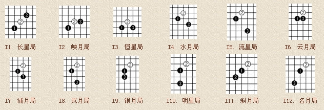
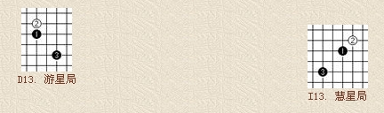

开局
#1 开局 作者：莲子 发表时间：2006-1-12 20:27:25
五子棋的开局是十分重要的。一般情况下，一局五子棋的着数在 20 至 40 着之间，因此，它的开局阶段是非常短暂的，大约在 7 、 8 着至 10 几着之间。在这一阶段的争夺中，双方的布局、应答将对以后的胜负起着关键的作用。一般来说，黑棋以攻为主，而白棋则以防为主。
职业连珠的开局是建立在两套基本打法上的，即“直止 (Direct) 打法 ” 和 “ 斜止 (Indirect) 打法”。如图 2.1 所示，按照职业连珠规则，黑 1 必须落在天元，如果像民间走法不走天元，则称之为“奇门”。之后，白 2 落子在天元直线侧 a 点为“直止打法”，落子在天元斜侧 b 点为 “ 斜止打法 ” 。
由这两种打法派生出各 13 种开局，如图 2.2 和图 2.3 所示。每种开局都有不同的名称，如下各图解：

斜止打法开局：

职业连珠指定开局名称繁多，不易记忆。京都五子棋少年队总教练 彭建国 先生编写的《彭氏口诀》则有助于记住职业开局的名称：
寒星溪月疏星首，花残二月并白莲，雨月金星追黑玉，松丘新宵瑞山腥。
星月长峡恒水流，白莲垂俏云浦岚，黑玉银月倚明星，斜月名月堪称朋。
二十六局先弃二，直指游星斜慧星。
口诀中前四句为直止，五至八句为斜止。将白 2 子比喻为白莲，将黑 1 子比喻为黑玉，很富有诗意。最后两句所指如下图所示。

在开局阶段，双方主要是二的争夺。双方必须设法创造自己的连二、活二、跳二或大跳二等，同时要阻挡对方的活二。无论哪种开局，均体现出这一规律。可以说，哪一方的二做得多 ( 有两个以上的活二 ) ，或者有效地阻挡住对方的活二，那么，哪一方的胜率就比较大。另外，开局时每一个次序、每一种节奏都不能忽视，输赢就在一步之差。
#2 Re:开局 作者：幽若 发表时间：2006-1-16 19:48:53
俺懂的开局不多,也不怎么会开,更不懂定式,多谢莲子老师在这教俺#3 Re:开局 作者：学习ing 发表时间：2006-1-24 12:15:06
受益非浅，以前都是自己琢磨下，不知道还有这么多名目的套路。
#4 Re:开局 作者：mige29 发表时间：2006-2-10 16:18:16
受益非浅,学习了.#5 Re:开局 作者：hyhyhy11 发表时间：2006-2-14 19:34:41
谢谢#6 Re:开局 作者：dfgc123 发表时间：2006-2-17 16:57:41
谢谢楼主！#7 Re:开局 作者：雁儿 发表时间：2006-3-7 20:46:43
很好，谢谢#8 Re:开局 作者：报到 发表时间：2006-3-13 16:55:59
学习#9 Re:开局 作者：magi 发表时间：2006-3-14 16:36:59
我是一只菜鸟，每次开局后几步就挨牵着走，就不知道怎么回事~~#10 Re:开局 作者：newhua 发表时间：2006-3-15 16:57:16
真牛，学习，学习!#11 Re:开局 作者：yidefei 发表时间：2006-4-6 15:42:30
其实这也是很好的记的.又不是很复杂的.我想.
到网上去找找,多下下,就记住了.不过记住了并不是表明你会下这个开局.
#12 Re:开局 作者：我们之间 发表时间：2006-6-6 11:03:07
太感谢了 莲子老师 以前真不懂这么多呢
#13 Re:开局 作者：梦之岛黄飞鸿 发表时间：2006-6-8 8:03:33
让我明白了更多的东西.#14 Re:开局 作者：非妤 发表时间：2006-6-26 10:50:15
谢谢,学习中~~~#15 Re:开局 作者：胖胖子 发表时间：2006-7-3 17:11:56
这些知识对于我们这些初学者来说，真是受益匪浅！
谢谢！
#16 Re:开局 作者：风月无边 发表时间：2006-8-26 11:22:26
谢谢了#17 Re:开局 作者：ベ☆ve寶々 发表时间：2006-9-3 7:39:46
顶顶顶~~~
学习学习~~
#18 Re:开局 作者：ベ☆ve寶々 发表时间：2006-9-3 11:45:01
受益非浅,学习了.#19 Re:开局 作者：检查用户名 发表时间：2006-9-5 10:51:44
谢谢：）#20 Re:开局 作者：啊丫呀 发表时间：2006-9-5 18:59:01
这些知识对于我们这些初学者来说，真是受益匪浅！
谢谢！
#21 Re:开局 作者：浩楠 发表时间：2006-9-12 12:06:46
比起这26种开局,我还是喜欢开妖刀,尤其是和高手对弈的时候
#22 Re:开局 作者：默默无闻 发表时间：2006-10-8 11:02:45
谢了~~~~~~~~~~~~#23 Re:开局 作者：radium 发表时间：2006-10-15 22:45:07
还有这么多套路啊 。。。
在这里学习了一段时间 再去QQ游戏玩，果然势力大增呀！！
#24 Re:开局 作者：风行奇迹 发表时间：2006-11-1 20:02:57
受益非浅,学习!#25 Re:开局 作者：菜鸟飞飞 发表时间：2006-11-6 19:43:02
看了这个才知道自己的无知
看了这个才知道五子棋的奥妙
多谢楼主
#26 Re:开局 作者：流水 发表时间：2006-11-7 14:08:22
xiexie
#27 Re:开局 作者：黑白之间 发表时间：2006-11-7 18:56:10
有收获,谢谢楼主.
#28 Re:开局 作者：二十七刀 发表时间：2006-11-11 15:42:15
#29 Re:开局 作者：EX70SL 发表时间：2007-1-18 4:53:59
谢谢，玩这么久终于知道这些开局是怎么回事了。我先手一直以来都习惯用丘月和浦月两种开局，和一般水平的人玩占尽优势，只要前三个子布好，大约13个子就可以搞定对方，不过确实面对高手，这几招就不行了，以后要多多学习。#30 Re:开局 作者：韩会英 发表时间：2007-1-18 9:27:54
谢谢~~学了很多#31 Re:开局 作者：roysun 发表时间：2007-6-17 18:10:29
受益非浅，以前都是自己琢磨下，不知道还有这么多名目的套路。#32 Re:开局 作者：凝霜若雪 发表时间：2007-7-1 15:31:56
顶~#33 Re:开局 作者：目光 发表时间：2007-7-2 9:02:54
通俗，明了！ 感谢！！
#34 Re:开局 作者：一辉 发表时间：2007-7-12 21:50:44
受益匪浅#35 Re:开局 作者：思●索○者 发表时间：2007-7-13 20:38:49
其实职业开局说有26种，去掉彗星和游星还有24种，看似很多，其实仔细的人就知道象银月和雨月就差不多，所走的方式也基本一样，在开局中有必胜和必输棋，花月和蒲月就是必胜的，也是最基本的，基本上五子棋的胜法都是从那演变过来的。如果你能开花蒲和高手下还能有95%的胜率，你就基本掌握五子的胜着了，接下来就要学如何做棋和防守了。有没有高手在呀？不知道我说的对不对呀？#36 Re:开局 作者：棋圣 发表时间：2007-7-26 14:22:03
我认为下棋的不用几这种 解说员的话另当别论#37 Re:开局 作者：来客沙丝 发表时间：2009-3-24 22:41:51
看不见图啊，不过越学越明白了。#38 Re:开局 作者：拖拉机车 发表时间：2009-7-2 13:07:59
讲下去看不懂#39 Re:开局 作者：星月族 发表时间：2009-12-15 10:59:02
学习中...#40 Re:开局 作者：星月族 发表时间：2009-12-16 15:19:40
用成都天元子的助记图、词，对记住开局名称有帮助，至于记位置还是这个好些